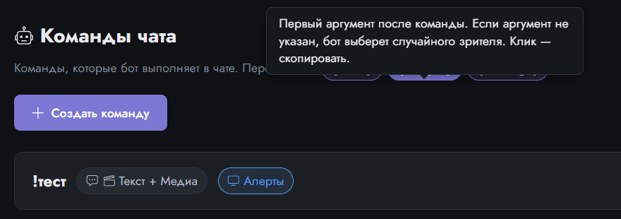
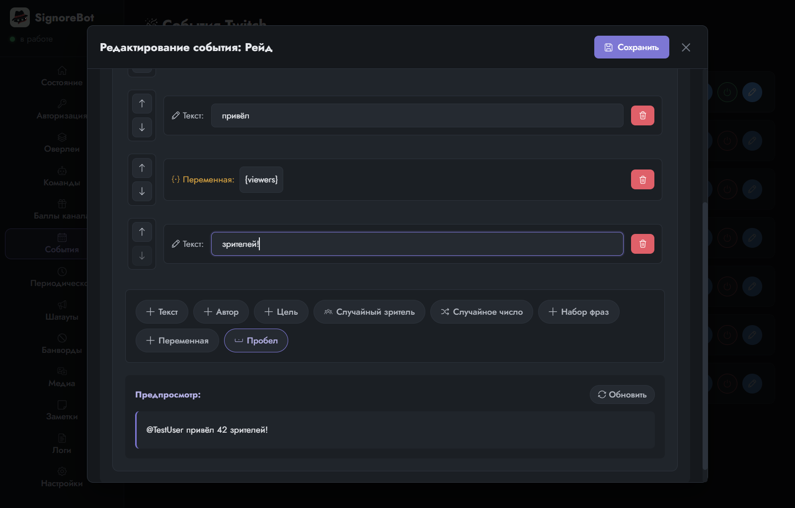

Урок 8 из 9
Переменные
Ответ «Привет, зритель!» одинаков для всех. Ответ «Привет, Aumphaadr!» — уже личный. Разница в одном слове, которое бот подставляет сам. Такие слова называются переменными, и они есть во всех разделах SignoreBot.
Что такое переменная
Переменная — это место в тексте, куда бот подставит значение в момент срабатывания. Записывается именем в фигурных скобках: {user}. Пока команда лежит в настройках, там буквально написано {user}; когда её вызовет зритель, на этом месте окажется его ник. Само слово пришло из программирования: переменная — «то, что меняется» от раза к разу, в отличие от обычного текста.
Придумать переменную самому нельзя: бот подставляет только те, о которых что-то знает. Поэтому у каждого повода свой набор, и он всегда написан прямо в редакторе, в строке «Доступные переменные». Клик по переменной копирует её в буфер обмена, чтобы не набирать скобки руками.

Где они встречаются
| Раздел | Переменные | Пример |
|---|---|---|
| Команды | {user} — кто написал; {target} — первое слово после команды (обычно чей-то ник); {message} — весь текст после команды | !обнять @Ebo_Bot → «{user} обнимает {target}» |
| Награды | {user}; {message} — текст, который зритель вписал при активации, если награда его требует | «{user} просит: {message}» |
| События | у каждого свои: {viewers} у рейда, {months} и {tier} у переподписки, {bits} у битсов, {total} у подарочных подписок | «{user} привёл {viewers} зрителей!» |
| Текст на оверлее | {user}, {target}, {message} — подпись под картинкой тоже умеет подставлять | «Бу от {user}» |
Переменная как блок
В конструкторе текста есть два способа вставить переменную. Первый — написать {user} прямо внутри блока «Текст». Второй — взять готовый блок. Автор и Цель — это те же {user} и {target}, только с @ впереди, чтобы вышло обращение. А блок Переменная со списком нужен для событий: он показывает лишь то, что у этого события есть, так что ошибиться в имени нельзя.

Цель ведёт себя аккуратно: если после команды никого не указали, бот подставит случайного зрителя из чата. Так команда !обнять работает и с ником, и без.